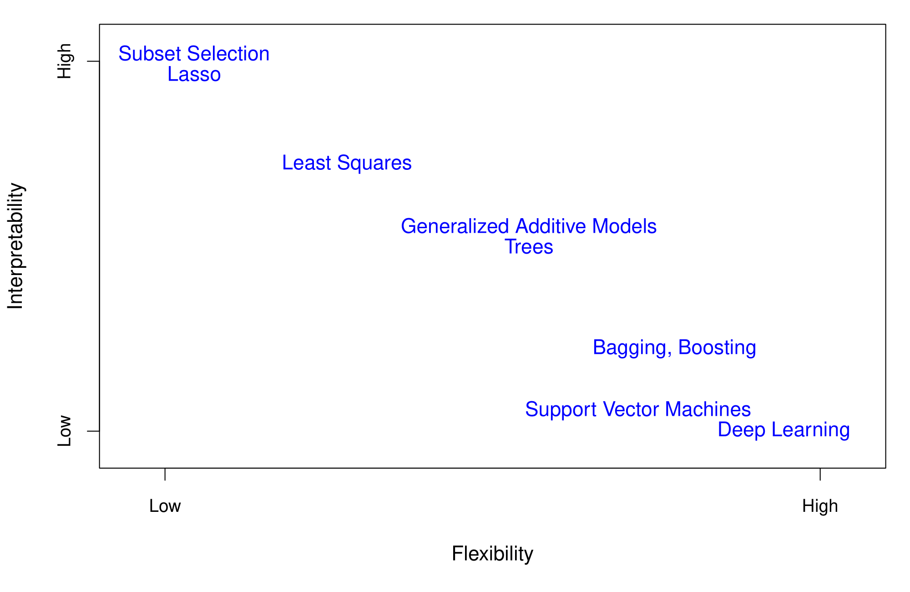
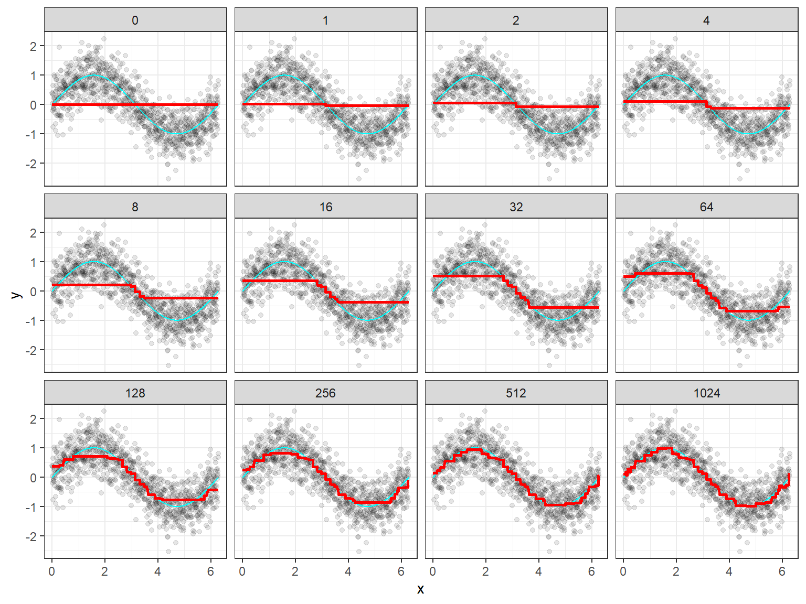
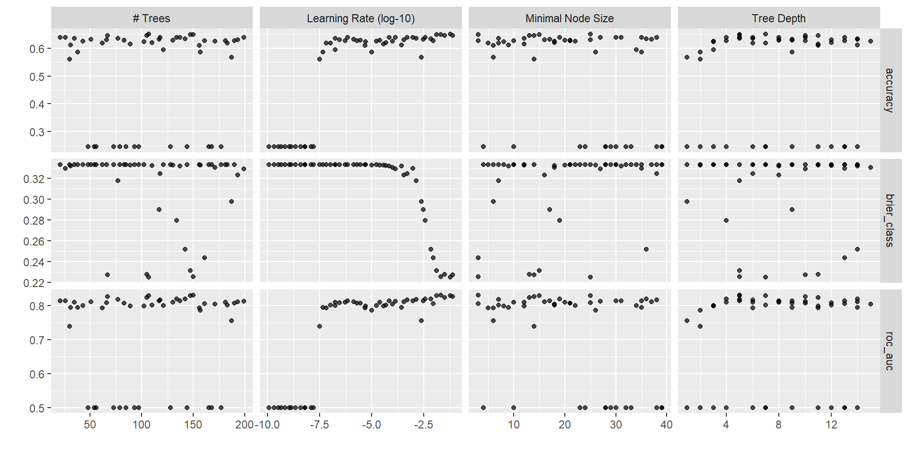
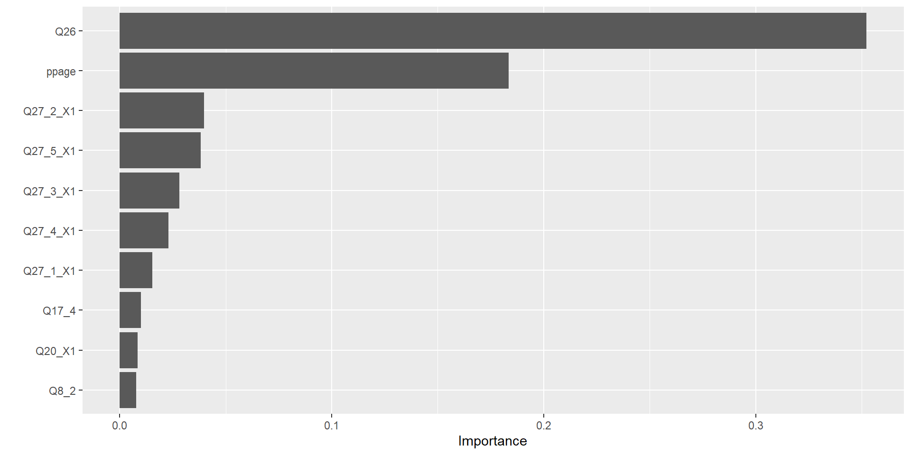

library(tidyverse)
library(tidymodels)
library(rpart.plot)
library(knitr)
library(kableExtra)
tidymodels_prefer()
set.seed(427)MATH 427: Boosting
Computational Set-Up
Ensemble Methods
- Single regression or classification trees usually have poor predictive performance.
- Ensemble Methods: use a collection of models (in this case, decision trees) to improve the predictive performance
- Downside: Interpretability
- Last Time:
- Bagging
- Random Forests
- This Time:
- Boosting
Flexibility vs. Interpretability

Boosting
Boosting
- Still an ensemble method in that it creates a bunch of models (trees in this case)
- Trees are created sequentially, and fit to the residuals of the previous trees
- Idea: each additional tree to improve upon the previous trees by focusing on places where the previous trees perform poorly
- Each model in the process is a weak model, referred to as the base learner
- learning slowly: as more trees are fit, the overall ensemble gradually improves
Boosting Algorithm
Let \(B\) be the number of trees you want to fit and \(d\) the maximum number of splits
- Set \(\hat{f}(x) = 0\) and \(r_i = y_i\) for all training set
- For \(b = 1,\ldots, B\): a. Fit tree \(\hat{f}_b\) with \(d\) splits (\(d+1\) leaves) using residuals \(r\) as response and features \(X\) as predictors. b. Update full model \(\hat{f}\): \(\hat{f} = \hat{f} + \lambda\hat{f}_b\) c. Update pseudo-residuals: \(r_i = r_i - \lambda\hat{f}_b(x_i)\)
- Output final model: \[\hat{f}(x) = \displaystyle \sum_{b=1}^{B} \lambda \ \hat{f}_b(x)\]
- It may be hard to see, but this is similar to gradient descent and so is called gradient boosting
Gradient Boosting

Many Implementations of Boosting
- Any implementation of boosting you use will like be a tweak of this
- AdaBoost
- Catboost
- LightGBM
- XGBoost
Gradient Boosting Tuning Parameters
Gradient Boosting in R
Data: Voter Frequency
- Info about data
- Goal: Identify individuals who are unlikely to vote to help organization target “get out the vote” effort.
voter_data <- read_csv('https://raw.githubusercontent.com/fivethirtyeight/data/master/non-voters/nonvoters_data.csv')
voter_clean <- voter_data |>
select(-RespId, -weight, -Q1) |>
mutate(
educ = factor(educ, levels = c("High school or less", "Some college", "College")),
income_cat = factor(income_cat, levels = c("Less than $40k", "$40-75k ",
"$75-125k", "$125k or more")),
voter_category = factor(voter_category, levels = c("rarely/never", "sporadic", "always"))
) |>
filter(Q22 != 5 | is.na(Q22)) |>
mutate(Q22 = as_factor(Q22),
Q22 = if_else(is.na(Q22), "Not Asked", Q22),
across(Q28_1:Q28_8, ~if_else(.x == -1, 0, .x)),
across(Q28_1:Q28_8, ~ as_factor(.x)),
across(Q28_1:Q28_8, ~if_else(is.na(.x) , "Not Asked", .x)),
across(Q29_1:Q29_10, ~if_else(.x == -1, 0, .x)),
across(Q29_1:Q29_10, ~ as_factor(.x)),
across(Q29_1:Q29_8, ~if_else(is.na(.x) , "Not Asked", .x)),
Party_ID = as_factor(case_when(
Q31 == 1 ~ "Strong Republican",
Q31 == 2 ~ "Republican",
Q32 == 1 ~ "Strong Democrat",
Q32 == 2 ~ "Democrat",
Q33 == 1 ~ "Lean Republican",
Q33 == 2 ~ "Lean Democrat",
TRUE ~ "Other"
)),
Party_ID = factor(Party_ID, levels =c("Strong Republican", "Republican", "Lean Republican",
"Other", "Lean Democrat", "Democrat", "Strong Democrat")),
across(!ppage, ~as_factor(if_else(.x == -1, NA, .x))))Split Data
set.seed(427)
voter_splits <- initial_split(voter_clean, prop = 0.7, strata = voter_category)
voter_train <- training(voter_splits)
voter_test <- testing(voter_splits)Define Model
trees: kind of a tuning parameter… want to select value that is large enough but doesn’t matter past that
gbm_model <- boost_tree(trees = tune(), learn_rate = tune(), tree_depth = tune(),
min_n = tune()) |>
set_engine("xgboost") |> # dont need importance
set_mode("classification")Define Recipe
gbm_recipe <- recipe(voter_category ~ . , data = voter_train) |>
step_indicate_na(all_predictors()) |>
step_zv(all_predictors()) |>
step_integer(educ, income_cat, Party_ID, Q2_2:Q4_6, Q6, Q8_1:Q9_4, Q14:Q17_4,
Q25:Q26) |>
step_impute_median(all_numeric_predictors()) |>
step_impute_mode(all_nominal_predictors()) |>
step_dummy(all_nominal_predictors(), one_hot = TRUE)Define Workflow and Fit
# need to install ranger
gbm_wf <- workflow() |>
add_model(gbm_model) |>
add_recipe(gbm_recipe)Creating Hyperparameter Grid
gbm_grid <- grid_latin_hypercube(trees(range = c(20, 200)),
tree_depth(range = c(1, 15)),
learn_rate(range = c(-10,-1)),
min_n(range = c(2, 40)), size = 50)
voter_folds = vfold_cv(voter_train, v = 5, repeats = 10, strata = voter_category)Tuning Hyperparameters in Parallel
library(doParallel)
cl <- makePSOCKcluster(9)
registerDoParallel(cl)
tuning_results <- tune_grid(
gbm_wf,
resamples= voter_folds,
grid = gbm_grid
)
stopCluster(cl)Results
autoplot(tuning_results)
Which one was best?
select_best(tuning_results, metric = "accuracy") |> kable()| trees | min_n | tree_depth | learn_rate | .config |
|---|---|---|---|---|
| 107 | 25 | 7 | 0.057429 | Preprocessor1_Model24 |
Evaluate performance
gbm_fit <- gbm_wf |>
finalize_workflow(select_best(tuning_results, metric = "accuracy")) |>
fit(voter_train)
augment(gbm_fit, new_data = voter_test) |>
accuracy(truth = voter_category, estimate = .pred_class)# A tibble: 1 × 3
.metric .estimator .estimate
<chr> <chr> <dbl>
1 accuracy multiclass 0.653Variable Importance
library(vip)
vip(gbm_fit)